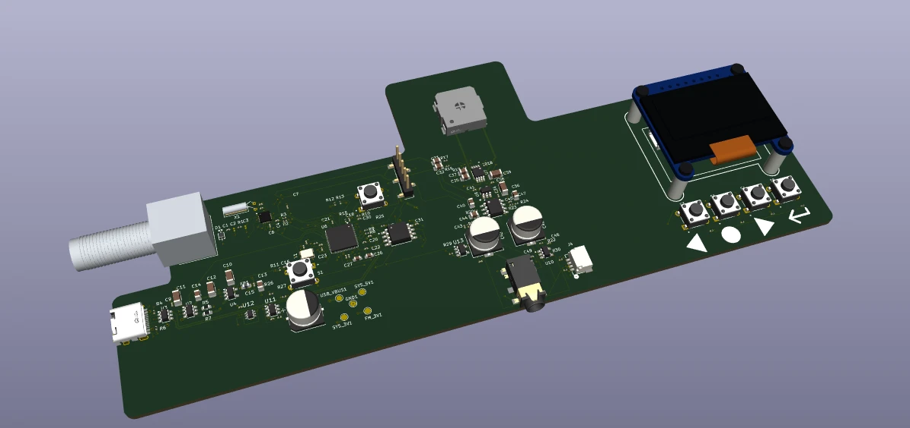
Project Sections
- Introduction and objectives
- System architecture
- Hardware design
- PCB layout and mechanical integration
- Design verification and planned validation
- Engineering trade-offs
- Conclusions and future work
1. Introduction and Project Objectives
1.1 Background
I designed a custom FM radio PCB to learn the complete hardware-development process: translating datasheets into circuits, integrating RF and digital control, and turning a schematic into a four-layer layout in KiCad.
The design combines a Si4705 FM receiver, an RP2040 microcontroller, separate headphone and speaker amplifiers, USB-C power, and an OLED-based user interface. The intended result is an 88–108 MHz receiver with stereo headphone playback and an onboard mono speaker.
The schematic and layout are complete at the design stage. The current KiCad project passes ERC and PCB DRC, including schematic-to-board parity, with zero reported violations or unconnected PCB items under the configured rules. Fabrication, assembly, firmware integration, and hardware measurements remain future work.
1.2 Project Objectives
The project was undertaken with two primary objectives.
Educational Objective - Hardware and PCB Design
The first objective was to gain practical experience with electronic hardware development and the KiCad design environment. This includes interpreting component datasheets, selecting suitable electronic components, designing supporting circuits, defining electrical interfaces, and translating schematics into a PCB layout suitable for manufacturing.
Particular attention was given to integrating multiple functional subsystems, including RF reception, digital control, power conversion, and analog audio circuitry.
Functional Objective - FM Radio Receiver
The second objective was to design a standalone FM radio receiver capable of receiving commercial FM broadcasts and reproducing audio through headphones or an onboard speaker.
The Si4705 handles reception, while the RP2040 manages tuning, the display, buttons, and audio controls. The final power architecture uses USB-C only; battery support was considered early in the project and removed during layout development.
Together, these objectives establish the project as both a practical introduction to PCB development and an exercise in designing an integrated electronic system.
1.3 System Requirements
The following requirements describe the final design targets. They are intended capabilities, not measured performance.
| Parameter | Design requirement |
|---|---|
| FM reception range | 88–108 MHz |
| RF antenna interface | External 75 Ω FM antenna |
| FM receiver | Silicon Labs Si4705-D60 |
| System controller | RP2040 microcontroller |
| Receiver control | I²C communication |
| User interface | OLED display and four pushbuttons |
| Headphone output | Stereo, 3.5 mm audio connector |
| Speaker output | Mono, 8 Ω speaker |
| Audio operation | Headphone detection and speaker muting |
| Power sources | USB-C only; battery removed from the final design |
| PCB design software | KiCad |
The requirements in Table 1 define the intended functionality of the FM radio rather than verified performance. Electrical verification, PCB design checks, and any subsequent physical testing will be addressed in later sections.
2. System Architecture
2.1 System Overview
The FM radio was designed as an integrated electronic system consisting of five primary functional subsystems: RF reception, digital control, user interface, audio amplification, and power management. Each subsystem performs a specific function while communicating with or providing electrical interfaces to the remaining components.
The overall system architecture is illustrated in Figure 2. The Silicon Labs Si4705 serves as the primary RF receiver, responsible for receiving and demodulating commercial FM broadcasts. An RP2040 microcontroller acts as the central controller, managing receiver configuration, user inputs, and information displayed on the OLED screen.
The receiver's analog audio outputs are routed to dedicated amplification circuits supporting both stereo headphone and mono speaker operation. The system is powered through a USB-C connection, with power management circuitry providing the required operating voltages to the individual subsystems. The USB-C interface also supports microcontroller programming and communication with a host computer.
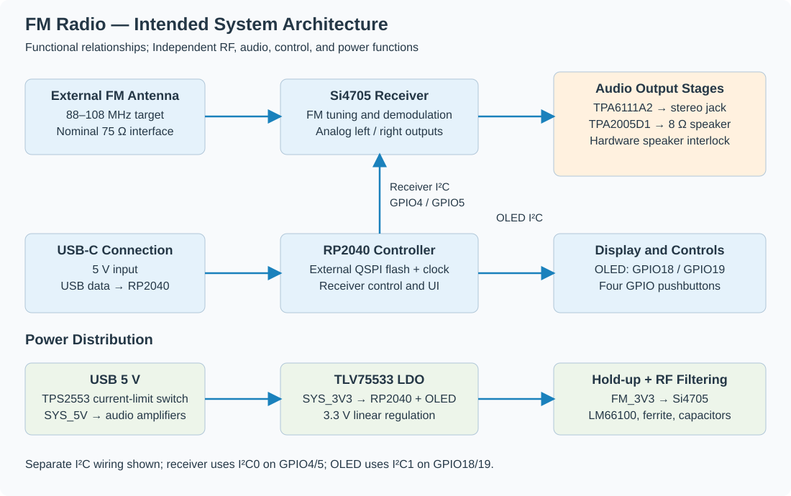
2.2 RF Reception and Digital Control
The RF reception subsystem is built around the Silicon Labs Si4705, an integrated FM receiver containing the circuitry required for FM signal reception and demodulation. Using a dedicated receiver IC eliminates the need to implement discrete RF amplification, frequency conversion, filtering, and demodulation stages, significantly reducing the complexity of the hardware design.
The external antenna input uses a nominal 75 Ω connector, an ESD7351HT1G protection diode, and a 1 nF series coupling capacitor. R1 is a 0 Ω series link, with C2 and C3 left unpopulated as matching-network options. This provides a tuning provision; it does not establish a measured 75 Ω match or receiver sensitivity.
Receiver operation is managed by the RP2040 microcontroller through an I²C interface. This allows the microcontroller to configure the receiver, select the desired operating frequency, and retrieve information regarding the received signal. Additional digital connections provide hardware reset and interrupt functionality.
This division of responsibilities allows the project to focus on the integration of RF, digital, and analog circuits rather than the implementation of a discrete radio receiver chain.
2.3 User Interface Architecture
The user interface consists of an OLED display and four physical pushbuttons connected to the RP2040 microcontroller.
The OLED display communicates with the microcontroller through an I²C interface and provides visual feedback regarding the radio's operating state. The pushbuttons are connected to GPIO inputs, allowing the user to interact with the system.
The RP2040 acts as an intermediary between the user interface and FM receiver, interpreting user commands and translating them into receiver configuration instructions.
In addition to receiver and user interface control, the RP2040 interfaces with the USB-C connector through its native USB controller. This provides a means of programming the microcontroller and establishing communication with a host computer.
The resulting architecture separates radio reception from user interaction, allowing both functions to be developed independently.
2.4 Audio Architecture
The Si4705 provides left and right analog audio outputs, which are routed to two dedicated audio amplification stages.
The stereo headphone output is implemented using the Texas Instruments TPA6111A2 amplifier, while the onboard mono speaker is driven by the TPA2005D1 Class-D amplifier. The mono signal is obtained by combining the left and right audio channels through a resistor-based summing network.
Separating the headphone and speaker amplification stages allows each circuit to be designed according to its intended load and operating requirements.
The audio subsystem also incorporates headphone detection and speaker muting functionality. The headphone connector provides an insertion-detection signal to the RP2040, while additional logic allows the speaker amplifier to be disabled when headphones are connected.
This arrangement combines microcontroller control with hardware-based speaker muting, preventing simultaneous speaker playback when headphones are connected without relying exclusively on firmware operation.
2.5 Power Management Architecture
The FM radio is powered through a USB-C connector providing a nominal 5 V DC input. The incoming supply is distributed and regulated to provide the operating voltages required by the different hardware subsystems.
The power architecture incorporates a 5 V system supply and a regulated 3.3 V rail. The 3.3 V rail powers the microcontroller and other low-voltage circuitry, while the audio amplification stages are supplied from the appropriate system power rail.
The FM receiver uses a separately filtered 3.3 V supply, reducing the potential for noise generated by digital switching and other circuits to couple into the sensitive RF subsystem.
Since RF, digital, and analog circuits share a common power source, power integrity is an important consideration. Supply noise, transient currents, and ground return paths must be considered to prevent interference between the subsystems.
These requirements influence the placement of decoupling capacitors, the use of supply filtering, and the physical arrangement of components on the PCB. The detailed implementation of the power management circuitry is discussed in Section 3.1.
2.6 Major Architectural Decisions
The system architecture was developed with an emphasis on balancing functional requirements, implementation complexity, and opportunities for practical hardware development.
Table 2 summarizes the major architectural decisions and their engineering rationale.
| Design decision | Engineering rationale |
|---|---|
| Dedicated Si4705 FM receiver | Simplifies RF reception and demodulation, reducing the need for discrete RF circuitry |
| RP2040 microcontroller | Provides system control, user-interface management, and native USB functionality |
| I²C communication | Simplifies digital communication between the microcontroller, FM receiver, and display |
| USB-C power and programming | Provides a common connector for power delivery and firmware development |
| Separate stereo and mono audio amplifiers | Allows independent implementation of headphone and speaker output stages |
| Hardware-assisted speaker muting | Disables the speaker when headphones are connected without relying exclusively on firmware |
| Separate filtered FM supply | Reduces potential coupling of supply noise into sensitive receiver circuitry |
| Modular OLED display | Simplifies display integration and reduces the complexity of the PCB design |
These architectural decisions establish the foundation for the detailed circuit implementations presented in Section 3. The individual subsystems were selected not only to satisfy the functional requirements of the FM radio, but also to create a manageable platform for exploring schematic design, component integration, and PCB development.
3. Hardware Design
The hardware design process involved translating the system architecture presented in Section 2 into individual electrical circuits, each responsible for a specific function. The design was developed in KiCad using hierarchical schematic sheets, allowing the different functional subsystems to be designed and evaluated independently before their integration into the complete system.
Component selection and circuit implementation were guided by manufacturer datasheets, electrical requirements, and compatibility between subsystems. Particular attention was given to power integrity, digital communication, analog signal handling, and the interfaces between the RF receiver, microcontroller, and audio circuitry.
This section presents the detailed implementation of the power management, FM receiver, microcontroller, audio amplification, and user interface circuits, emphasizing the engineering considerations and design decisions involved.
3.1 Power Management
3.1.1 Design Requirements
The power management subsystem was designed to supply the various electronic components while supporting power delivery, microcontroller programming, and USB communication through a single USB-C connector.
The system operates from a nominal 5 V USB supply and requires two primary voltage rails: a 5 V rail for the audio amplification stages and a regulated 3.3 V rail for the microcontroller and other low-voltage components.
In addition to voltage regulation, the design must address overcurrent protection, electrostatic discharge (ESD), supply decoupling, and noise isolation. These considerations are particularly important in a mixed-signal system combining digital circuitry, RF reception, and analog audio amplification.
3.1.2 USB-C Input and Protection
The USB-C interface is implemented using a TYPE-C-31-M-12 connector, providing both power and USB 2.0 data connectivity.
Two 5.1 kΩ pull-down resistors, R4 and R6, are connected to the CC1 and CC2 pins, respectively. These resistors identify the device as a USB power consumer, allowing a compatible USB source to provide the standard 5 V supply.
The USB D+ and D− nets pass through a USBLC6-2SC6 ESD protection device and 27 Ω series resistors, R8 and R9, before reaching the RP2040. The connector carries USB 2.0 data connections; the RP2040 operates at USB full speed, not 480 Mbit/s high speed.
The ESD protection device provides a discharge path for transient voltages that could otherwise damage the microcontroller's USB interface. The series resistors support signal integrity by helping control reflections and high-frequency ringing along the USB data lines.
3.1.3 Current Limiting and Power Distribution
The incoming USB supply is connected to a Texas Instruments TPS2553DBVT power-distribution switch.
R5 (60.4 kΩ) programs the TPS2553 current limit. This protects the downstream supply, but does not negotiate or authorize USB source current. Firmware and the system power budget must respect the current available from the connected source.
The device also provides a fault indication output, connected to the USB_PWR_FAULT signal and pulled up to the 3.3 V rail using R7. This allows the microcontroller to detect power-related fault conditions.
The switch output establishes the SYS_5V supply rail, which is used by the audio amplification stages and the downstream 3.3 V regulator. Unlike the regulated 3.3 V rail, SYS_5V follows the USB input voltage, subject to the power switch's voltage drop and current limiting.
The complete USB interface and power management circuit is illustrated in Figure 3.
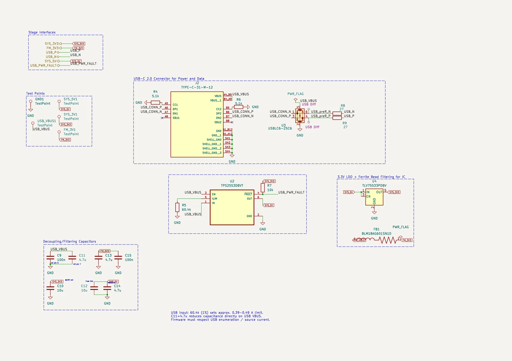
3.1.4 Voltage Regulation and RF Supply Filtering
The regulated 3.3 V supply is generated using the Texas Instruments TLV75533PDBV low-dropout (LDO) linear regulator.
The TLV75533 generates SYS_3V3 from SYS_5V. Its 500 mA device rating is subject to thermal limits: a linear regulator dissipates approximately (V_IN − V_OUT) × I_OUT. At 5 V input and 500 mA, that is about 0.85 W, so the actual usable current depends on the package, copper area, and ambient temperature.
TLV755P electrical and thermal specifications
The receiver supply passes through an LM66100 ideal-diode stage to FM_HOLD, then through BLM18AG601SN1D ferrite bead FB1 to FM_3V3. A 220 µF hold-up capacitor and local bypass capacitors support the receiver rail during power transitions. The related reset supervisor is described in Section 3.6.
The ferrite bead and local capacitors are intended to reduce conducted high-frequency noise. Their effectiveness depends on frequency, load current, source impedance, and layout; the filtered rail is not a separate regulated or galvanically isolated supply.
Separating the receiver supply from noisier digital and audio loads is intended to reduce unwanted coupling into the analog and RF signal paths.
3.1.5 Supply Decoupling and Verification Interfaces
The power distribution network incorporates bypass and bulk capacitors across the main supply rails.
The decoupling arrangement combines smaller ceramic capacitors, intended to suppress high-frequency supply disturbances, with larger capacitance values that provide local energy storage and help reduce voltage fluctuations during transient load conditions.
The design also incorporates dedicated test points for the main supply rails, allowing voltage measurements to be performed during initial PCB bring-up and subsequent hardware verification.
Test points expose USB_VBUS, SYS_5V, SYS_3V3, FM_3V3, and ground for bring-up measurements. Receiver reset and hold-up behavior will also be checked during controlled power removal and input overload.
3.1.6 Power Management Design Summary
Table 3 summarizes the main components and functions of the power management subsystem.
| Component / Interface | Implementation | Purpose |
|---|---|---|
| USB-C connector | TYPE-C-31-M-12 | Power input and USB 2.0 data |
| CC resistors | 2 × 5.1 kΩ | USB sink identification |
| USB ESD protection | USBLC6-2SC6 | Protect USB data lines |
| USB series resistors | 2 × 27 Ω | USB signal conditioning |
| Power switch | TPS2553DBVT | Current limiting and fault detection |
| Current-limit resistor | 60.4 kΩ | Configure TPS2553 current limit |
| Voltage regulator | TLV75533PDBV | Generate 3.3 V supply |
| Ferrite bead | BLM18AG601SN1D | FM supply noise filtering |
| Decoupling network | 100 nF to 10 µF capacitors | Supply filtering and transient support |
| Test points | VBUS, 5 V, 3.3 V, FM_3V3, GND | Power verification during bring-up |
The resulting power architecture provides controlled distribution of the USB supply, a regulated low-voltage rail, and additional filtering for the FM receiver. The combination of current limiting, ESD protection, local decoupling, and accessible test points supports the electrical integration and subsequent testing of the completed PCB.
3.2 FM Receiver Circuit
3.2.1 Receiver Architecture
The RF reception subsystem is based on the Silicon Labs Si4705-D60-GM, a highly integrated FM broadcast receiver implemented in a 20-pin QFN package. The device integrates the principal functions required for FM reception, including RF signal processing, channel selection, demodulation, and stereo audio generation.
The use of a dedicated receiver IC significantly reduces the complexity of the external circuitry by eliminating the need for discrete RF amplification, frequency conversion, and demodulation stages.
The Si4705 communicates with the RP2040 microcontroller through an I²C interface, allowing digital control of receiver operation and access to reception information. The demodulated audio is provided through dedicated analog left and right outputs, which are subsequently routed to the audio amplification circuitry.
The supporting receiver circuitry consists of the antenna input, reference clock, digital control and configuration signals, supply decoupling, and grounding connections.
3.2.2 RF Input Interface
The FM signal reaches FMI (pin 2) through the FMI_Input net and the input coupling/protection network. The antenna-interface schematic below shows the populated path and optional matching capacitors.
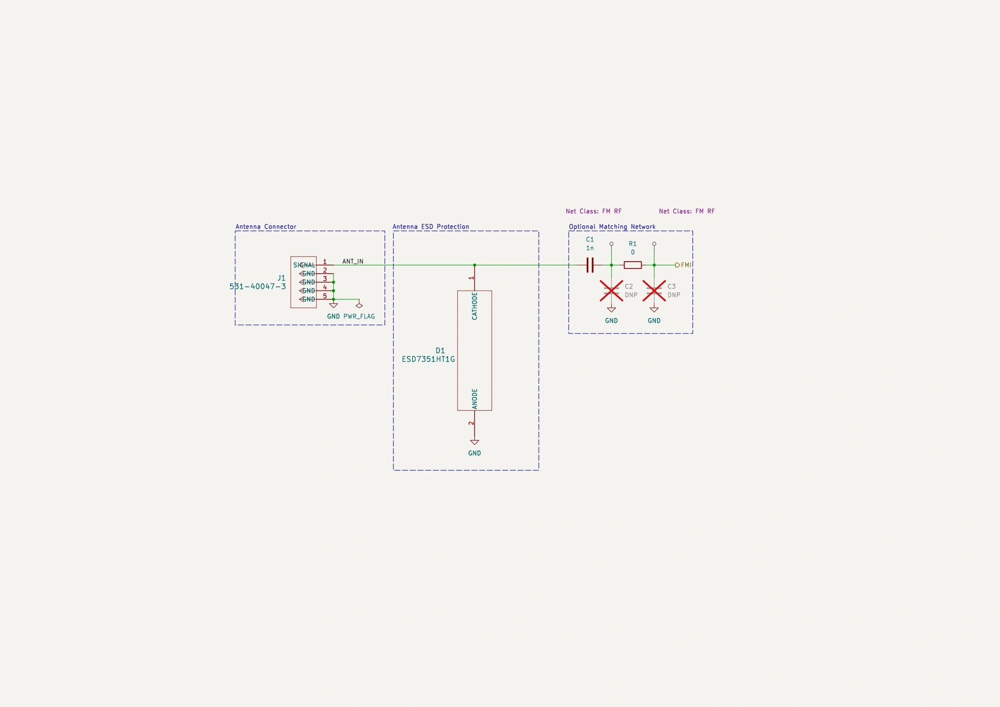
The antenna input circuitry must provide a suitable RF connection while minimizing insertion loss, impedance discontinuities, and susceptibility to unwanted noise. Particular attention is therefore required during PCB layout to keep the RF input trace short and minimize coupling from nearby digital and power circuitry.
The RFGND pin is connected to the PCB ground network, providing the required reference for the receiver's RF circuitry.
The complete FM receiver circuit, including the RF input, reference clock, control interfaces, power supply decoupling, and analog audio outputs, is presented in Figure 4.
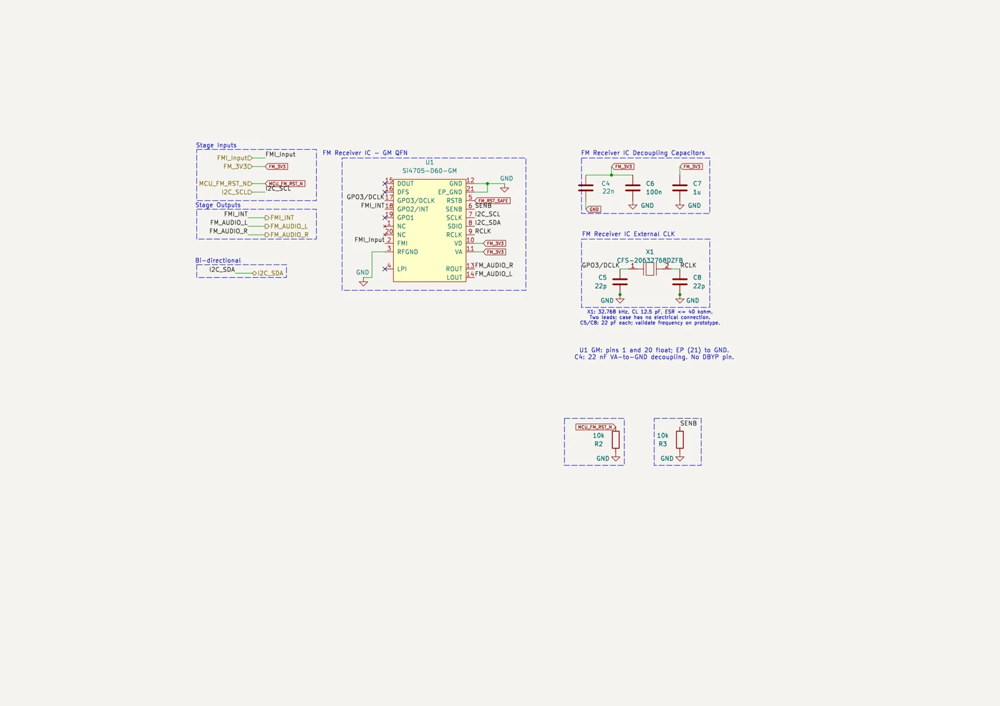
3.2.3 Reference Clock
The Si4705 requires a reference clock for its internal frequency synthesis and signal-processing functions. In this design, the clock is provided by an external 32.768 kHz crystal, X1 (CFS-20632768DZFB), connected between the GPIO3/DCLK and RCLK pins.
The schematic specifies a 32.768 kHz crystal with 12.5 pF load capacitance and ESR up to 40 kΩ. C5 and C8 are each 22 pF. These produce 11 pF in series, before stray capacitance is included; their suitability must be checked against the selected crystal and oscillator requirements.
With 22 pF on each side, the estimate becomes C_L ≈ 11 pF + C_stray. Startup, tuning error, and the required crystal-mode firmware configuration still need to be verified.
The effective crystal load capacitance can be estimated as:
where \(C_{\mathrm{stray}}\) represents the parasitic capacitance introduced by the PCB traces, IC pins, and component packages.
The use of an external crystal provides the receiver with a dedicated frequency reference, avoiding the need to generate a continuous reference signal using the microcontroller.
The final oscillator frequency and startup reliability depend on the actual parasitic capacitance and crystal characteristics, and should therefore be verified during hardware testing.
3.2.4 Digital Control and Configuration
The receiver communicates with the RP2040 microcontroller through an I²C interface consisting of the SCLK and SDIO signals.
The microcontroller uses this interface to initialize the receiver, configure operating parameters, select the desired reception frequency, and retrieve information regarding received signals.
The receiver reset input, RSTB, is driven by FM_RST_SAFE from the TPS3808 supervisor. GPIO13 controls the supervisor manual-reset input through MCU_FM_RST_N. The receiver GPIO2/INT output connects to GPIO14 through FMI_INT.
R2 is a 10 kΩ pull-down on MCU_FM_RST_N, keeping the receiver reset request asserted while the MCU is not driving it. R28 pulls FM_RST_SAFE up to FM_3V3. R3 pulls SEN low and sets its address configuration in 2-wire mode; I²C bus-mode selection also depends on GPO1/GPO2 at reset release and the required SCLK timing. See the Si4704/05-D60 datasheet, Section 4.16.
These control connections allow receiver operation to be coordinated with the RP2040 firmware while maintaining a relatively simple electrical interface.
3.2.5 Power Supply and Analog Audio Interface
The Si4705 is powered through the filtered 3.3 V supply, FM_3V3, described in Section 3.1.
Both the analog supply (VA) and digital supply (VD) are connected to this rail. Local decoupling is implemented using three capacitors: C4 (22 nF), C6 (100 nF), and C7 (1 µF), connected between the supply and ground.
These capacitors provide local bypassing. Their effectiveness depends on placement, package parasitics, and the supply/ground loop; different nominal values alone do not guarantee broadband noise suppression.
The receiver's ground connections, including its exposed thermal pad, are connected to the PCB ground network.
The Si4705 provides analog stereo audio through its LOUT and ROUT pins, connected to the FM_AUDIO_L and FM_AUDIO_R signals, respectively.
These signals are routed to the audio subsystem, where dedicated amplifier circuits drive the stereo headphone output and mono speaker. The detailed implementation of the audio amplification and output switching circuitry is discussed in Section 3.4.
3.2.6 FM Receiver Design Summary
The principal components and electrical interfaces of the FM receiver subsystem are summarized in Table 4.
| Parameter | Design implementation |
|---|---|
| Receiver IC | Si4705-D60-GM |
| Package | 20-pin QFN |
| FM reception range | 88–108 MHz |
| RF input | FMI, pin 2 |
| Digital control | I²C (SCLK / SDIO) |
| Reset | FM_RST_SAFE from U11; GPIO13 controls MCU_FM_RST_N |
| Interrupt | GPIO2/INT |
| Configuration resistor | R3, 10 kΩ |
| Reset-control pull-down | R2, 10 kΩ |
| Reference crystal | CFS-20632768DZFB |
| Reference frequency | 32.768 kHz |
| Crystal load capacitors | C5/C8, 22 pF |
| Analog supply | VA, 3.3 V |
| Digital supply | VD, 3.3 V |
| Supply decoupling | 22 nF, 100 nF, 1 µF |
| Audio outputs | LOUT / ROUT, stereo analog |
The Si4705-based receiver provides a compact solution for FM reception while requiring relatively few external components. The dedicated reference clock, filtered power supply, and digital control interface allow the receiver to be integrated with the remaining system circuitry.
The actual reception performance, oscillator stability, and susceptibility to supply and digital noise will be evaluated during hardware testing.
3.3 RP2040 Microcontroller
3.3.1 Microcontroller Architecture
The digital control subsystem is built around the Raspberry Pi RP2040, a dual-core ARM Cortex-M0+ microcontroller responsible for coordinating the operation of the FM radio.
The RP2040 was selected for its processing capabilities, extensive GPIO functionality, integrated communication peripherals, and native USB support. These features allow a single microcontroller to manage receiver configuration, user inputs, display operation, and audio output control without requiring additional dedicated control hardware.
The receiver uses I²C0 on GPIO4/GPIO5. The OLED uses I²C1 on GPIO18/GPIO19. Separate pull-up resistors support each bus. GPIO connections provide button inputs, receiver reset and interrupt signals, speaker requests, headphone muting, and jack detection.
Unlike a complete microcontroller module, the RP2040 is implemented directly on the PCB in its 56-pin QFN package. This requires the integration of external clock, memory, power decoupling, and programming circuitry.
3.3.2 Power Supply and Decoupling
The RP2040 is powered from the regulated 3.3 V supply (SYS_3V3) generated by the power management subsystem described in Section 3.1.
The RP2040 receives SYS_3V3 at its I/O, USB, ADC, and regulator-input supply pins. VREG_VOUT is connected to both DVDD pins, providing the internal regulator output to the digital core. The exported netlist confirms this connection, along with its local decoupling capacitors.
Local decoupling capacitors are placed near the supply pins to provide low-impedance current paths during digital switching and reduce disturbances propagating through the shared power network.
The design incorporates 100 nF ceramic capacitors near the I/O and peripheral supply pins, together with larger capacitors supporting the internal regulator input and output.
The exposed ground pad of the QFN package is connected to the PCB ground network, providing a low-impedance electrical and thermal connection.
3.3.3 External Reference Clock
The design specifies an external 12 MHz reference for the RP2040 clock-generation circuitry and USB operation.
The 12 MHz crystal network connects to XIN and XOUT using local net labels. The netlist connects Y1 and C17 to XIN, while XOUT reaches the other crystal terminal through R14.
The crystal circuit incorporates two 15 pF load capacitors connected to ground, together with a 1 kΩ series resistor in the oscillator path. The selected component values are intended to support stable oscillator operation while satisfying the clock requirements of the RP2040.
The external reference clock is subsequently used by the microcontroller's internal phase-locked loops (PLLs) to generate the operating frequencies required by the processor and its peripherals.
Crystal placement and routing are important PCB considerations. The crystal and its supporting components should be positioned close to the microcontroller, with short connections and minimal coupling from nearby high-speed or switching signals.
3.3.4 External QSPI Flash Memory
The RP2040 has an internal boot ROM but no internal user-program flash. This design therefore uses external QSPI flash for persistent firmware storage.
The design uses a Winbond W25Q16JV serial flash memory, providing 16 Mbit (2 MB) of nonvolatile storage.
The memory communicates with the RP2040 through its dedicated Quad Serial Peripheral Interface (QSPI), which supports execute-in-place (XIP) operation, allowing the microcontroller to execute firmware directly from external flash.
The interface consists of a serial clock, four bidirectional data signals, and a chip-select signal. The flash device is powered from the 3.3 V supply and includes local decoupling.
The integration of the external flash memory, clock circuitry, supply connections, and associated control signals is illustrated in Figure 5.
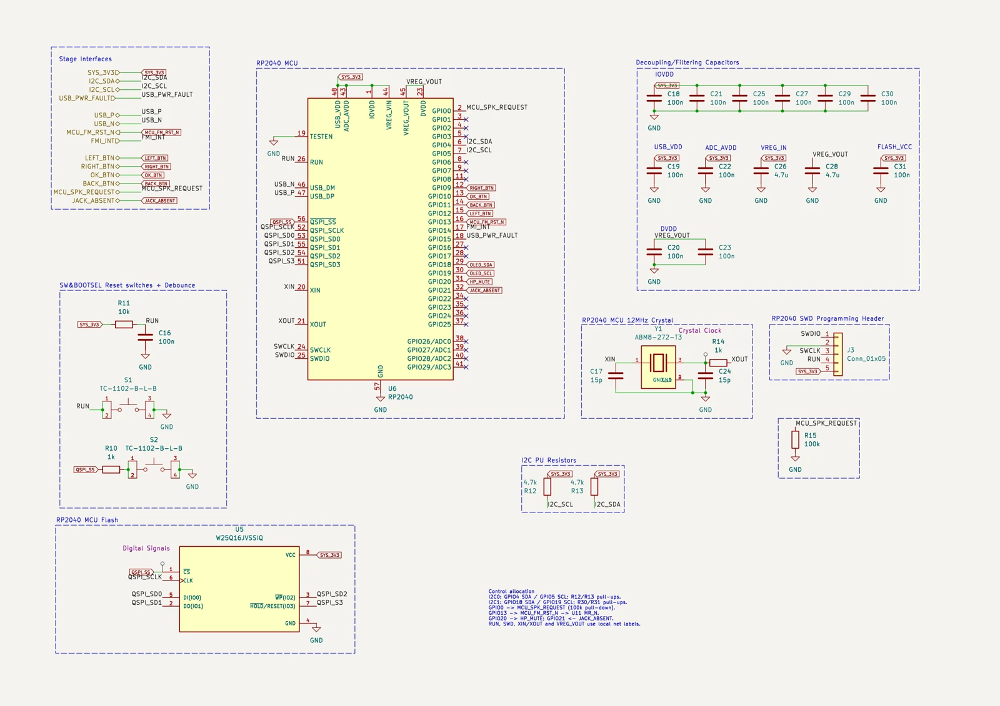
3.3.5 USB Programming, Reset, and Debugging
The RP2040 incorporates a native USB controller, allowing firmware programming and communication with a host computer through the USB-C interface discussed in Section 3.1.
The USB data nets connect to USB_DP and USB_DM. Raspberry Pi recommends placing the 27 Ω series resistors close to the RP2040; their schematic-sheet location does not establish their physical PCB placement.
Raspberry Pi hardware design guidance
The design includes two dedicated control buttons: BOOTSEL and RUN.
The BOOTSEL button is connected to the QSPI flash chip-select interface. Holding the button during reset prevents normal external flash boot and causes the RP2040 to enter its built-in USB bootloader, allowing firmware to be transferred from a host computer.
The RUN button pulls the MCU RUN input low. R11 provides a 10 kΩ pull-up and C16 provides 100 nF filtering. RUN also reaches the SWD header. The exported netlist confirms the reset, SWDIO, and SWCLK paths to their MCU pins.
In addition to USB programming, the design incorporates a Serial Wire Debug (SWD) header providing access to the microcontroller's debugging interface.
The SWD connection supports firmware debugging, processor inspection, and programming using compatible debugging equipment. Providing both USB bootloader access and SWD debugging simplifies firmware development and troubleshooting during initial PCB bring-up.
3.3.6 Peripheral and GPIO Allocation
The microcontroller interfaces with the system's functional subsystems through its integrated peripherals and general-purpose I/O pins.
The two hardware buses are independent: I²C0 uses I2C_SDA/I2C_SCL on GPIO4/GPIO5, with R12/R13 providing 4.7 kΩ pull-ups; I²C1 uses OLED_SDA/OLED_SCL on GPIO18/GPIO19, with R30/R31 providing 4.7 kΩ pull-ups. Firmware can therefore operate the receiver and display with separate hardware I²C controllers.
The four physical pushbuttons are connected to individual GPIO pins, allowing firmware to distinguish between different user commands.
GPIO0 drives MCU_SPK_REQUEST and has a 100 kΩ pull-down, R15, so the speaker request defaults low. GPIO20 drives HP_MUTE, which has a 10 kΩ pull-up for a muted startup state. GPIO21 reads JACK_ABSENT. These connections are confirmed in the project netlist.
This allocation provides a centralized control architecture while retaining unused GPIO resources for potential future expansion.
3.3.7 Microcontroller Design Summary
Table 5 summarizes the principal components and interfaces of the microcontroller subsystem.
| Parameter | Design implementation |
|---|---|
| Microcontroller | Raspberry Pi RP2040 |
| Processor architecture | Dual-core ARM Cortex-M0+ |
| Package | QFN-56 |
| External supply | 3.3 V (SYS_3V3) |
| Internal core voltage | Approximately 1.1 V |
| Reference clock | 12 MHz crystal |
| Crystal load capacitors | 2 × 15 pF |
| Oscillator series resistor | 1 kΩ |
| External flash | Winbond W25Q16JV |
| Flash capacity | 16 Mbit (2 MB) |
| Flash interface | QSPI |
| Receiver and display control | I²C0 on GPIO4/5; I²C1 on GPIO18/19 |
| Programming | USB bootloader |
| Debugging | SWD |
| Hardware controls | BOOTSEL and RUN buttons |
| Additional interfaces | Pushbuttons, FM receiver control, speaker enable |
The RP2040 subsystem provides the central control functionality required by the FM radio while integrating the supporting hardware necessary for standalone microcontroller operation.
The external clock, QSPI memory, power decoupling, and programming interfaces allow the RP2040 to be implemented directly on the PCB rather than using a preassembled development board.
This implementation introduces additional design considerations involving high-speed signal routing, oscillator layout, supply integrity, and device programming, providing practical experience in integrating a microcontroller into a custom electronic system.
3.4 Audio Amplification and Output Control
3.4.1 Audio Subsystem Architecture
The audio subsystem was designed to support two independent output configurations: stereo headphone playback and mono playback through an onboard speaker.
The Si4705 FM receiver provides separate left and right analog audio signals, which are routed to dedicated amplification stages. The headphone output is implemented using a Texas Instruments TPA6111A2 stereo amplifier, while the onboard speaker is driven by a TPA2005D1 Class-D mono amplifier.
Separate amplification stages were selected because headphones and speakers present different electrical requirements. Headphones typically require relatively low output power and low-noise stereo amplification, whereas the onboard speaker requires higher current capability to drive its lower-impedance load.
The audio subsystem also incorporates automatic headphone detection and speaker muting. This functionality combines microcontroller control with hardware logic to prevent speaker playback when headphones are connected.
3.4.2 Stereo Headphone Amplifier
The stereo headphone output is based on the Texas Instruments TPA6111A2, a dual-channel Class-AB audio amplifier.
The receiver channels reach the headphone amplifier through C40/C47 (1 µF) and R20/R24 (20 kΩ). Feedback resistors R21/R23 are 66.5 kΩ, giving an inverting midband gain of −66.5/20 = −3.325 per channel. C43/C45 (5.1 pF) compensate the feedback paths.
The combination of the input coupling capacitance and the amplifier's input resistance creates a high-pass response, with a cutoff frequency approximated by:
where \(R_{\mathrm{in}}\) represents the effective input resistance and \(C_{\mathrm{in}}\) is the coupling capacitance.
The input network must therefore be selected to provide an appropriate low-frequency response without introducing excessive signal attenuation.
Both headphone outputs pass through 220 µF DC-blocking capacitors to the jack: U8 VO1 connects through C42 to J5 tip, and VO2 connects through C46 to J5 ring. The current schematic and netlist show both paths connected. U8 is powered from SYS_5V with local decoupling.
HP_MUTE and HP_SHUTDOWN are distinct signals. GPIO20 drives HP_MUTE; an SN74AHCT1G32 OR gate, powered from SYS_5V, combines it with JACK_ABSENT to drive the amplifier shutdown pin. High on either input shuts the headphone amplifier down. R29 pulls HP_MUTE high until firmware deliberately enables playback.
3.4.3 Mono Speaker Amplifier and Audio Summing
The onboard speaker is driven by the Texas Instruments TPA2005D1, a mono Class-D audio amplifier.
The left and right receiver channels feed the speaker amplifier through separate 1 µF capacitors and 150 kΩ resistors. The resistors keep the receiver outputs from being directly shorted together and implement summing at the amplifier input.
The summing circuit allows both channels to contribute to the speaker output without directly shorting the receiver's left and right outputs together.
A passive, unloaded pair of equal summing resistors would produce the average below. This is a conceptual relation, not the complete gain equation for the TPA2005D1 circuit:
For the shown TPA2005D1 circuit, the datasheet summing relation gives a midband gain magnitude of about 300 kΩ / 150 kΩ = 2 per channel. Identical in-phase left and right signals therefore give about four times either input, before clipping and other nonideal effects. Output polarity depends on which bridge terminal is used as the reference.
TPA2005D1 input-summing equations
The opposite differential input uses a 75 kΩ resistor, matching the parallel resistance of the two 150 kΩ input branches. This is an impedance-balancing arrangement, not a second audio channel.
The TPA2005D1 uses Class-D amplification, in which the output transistors operate primarily as switches rather than linear devices. This topology offers high efficiency and is particularly suitable for driving a low-impedance speaker.
The TPA2005D1 drives the 8 Ω, 0.7 W speaker as a bridge load. The specified power corresponds to about √(0.7 × 8) = 2.37 V RMS across the speaker; neither bridge terminal connects to ground.
Using the receiver datasheet upper value of 90 mV RMS per channel at 22.5 kHz deviation, linear scaling to 75 kHz gives about 0.30 V RMS per channel. With equal in-phase channels and a total gain magnitude of four, the estimated speaker voltage is 1.2 V RMS, or 1.2²/8 ≈ 0.18 W. This estimate is below the speaker rating, but is not a hard power limiter or a hardware measurement. Bring-up will verify actual RMS power and distortion at full deviation.
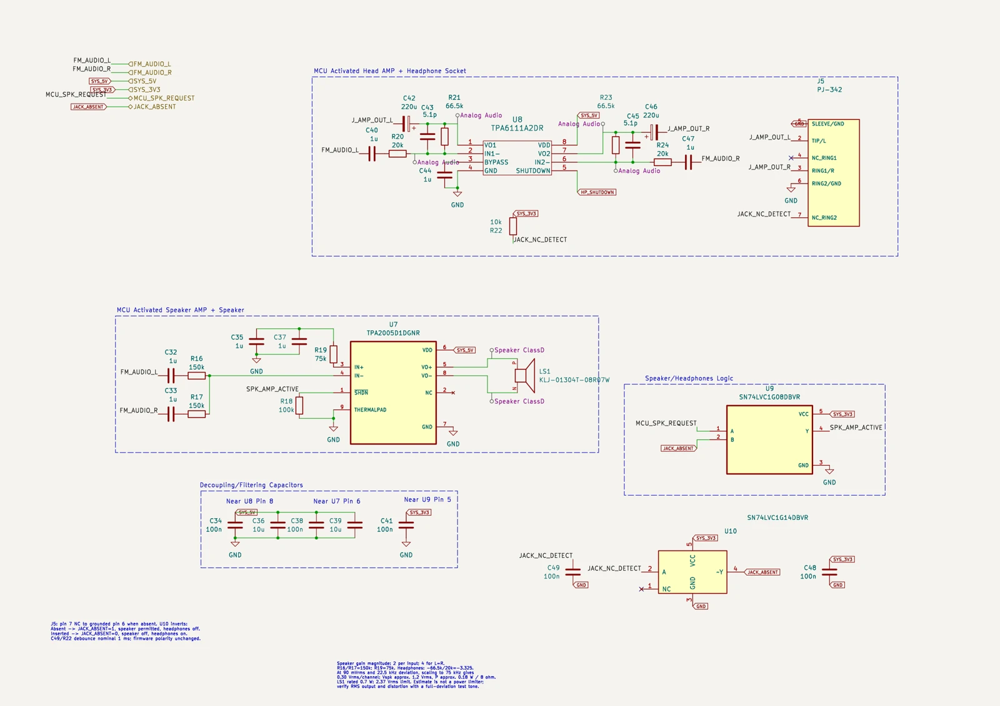
3.4.4 Headphone Detection and Automatic Speaker Muting
To improve usability, the audio subsystem incorporates automatic speaker muting when headphones are connected.
The jack contact feeds JACK_NC_DETECT through a 10 kΩ pull-up and 100 nF debounce capacitor. The SN74LVC1G14 inverter produces JACK_ABSENT: high with no plug and low with headphones inserted. The same signal controls the speaker interlock and the headphone shutdown OR gate.
The speaker amplifier is controlled using a combination of the microcontroller's MCU_SPK_REQUEST signal and hardware logic implemented using an SN74LVC1G08 two-input AND gate.
The intended speaker enable condition can be expressed as:
Under this arrangement, the speaker amplifier can be enabled only when two conditions are satisfied: the microcontroller requests speaker playback, and no headphones are connected.
Headphone insertion drives JACK_ABSENT low, blocking the speaker-enable AND gate. It also allows the headphone amplifier to operate if HP_MUTE is low. Removing the plug drives JACK_ABSENT high, shutting the headphone amplifier down while allowing the MCU to request speaker playback.
This approach provides a hardware-level output interlock rather than relying exclusively on firmware to respond to headphone insertion.
3.4.5 Power Integrity and PCB Layout Considerations
Both audio amplifiers are supplied from the 5 V system rail generated by the power distribution stage.
Because the audio subsystem combines low-level analog signals with relatively high-current speaker outputs, PCB layout plays an important role in preventing noise coupling and maintaining signal integrity.
The low-level audio traces should be routed away from digital switching signals and Class-D speaker output traces. Decoupling capacitors should be placed close to the amplifier supply pins to minimize the impedance of high-frequency current return paths.
Particular consideration is required for the Class-D amplifier, whose switching outputs may introduce high-frequency interference through conducted and radiated coupling. Maintaining compact output current loops and avoiding unnecessary proximity to the FM receiver and antenna input helps reduce this risk.
The headphone and speaker output stages also require appropriate grounding and return-current management to prevent audio current transients from disturbing the receiver's sensitive analog circuits.
These considerations are addressed further in Section 4, which discusses PCB component placement, routing, and grounding.
3.4.6 Audio Subsystem Design Summary
Table 6 summarizes the principal components and functionality of the audio subsystem.
| Parameter | Design implementation |
|---|---|
| Audio source | Si4705 stereo analog outputs |
| Headphone amplifier | TPA6111A2 |
| Headphone configuration | Stereo, Class-AB |
| Headphone connector | 3.5 mm stereo jack |
| Speaker amplifier | TPA2005D1 |
| Speaker configuration | Mono, Class-D |
| Speaker impedance | 8 Ω |
| Mono signal generation | Passive left/right summing network |
| Audio amplifier supply | 5 V (SYS_5V) |
| Headphone detection | Jack insertion-detection contact |
| Speaker control logic | SN74LVC1G08 AND gate |
| Microcontroller control | Speaker request and headphone control signals |
| Main design considerations | Audio noise, amplifier efficiency, output switching, and PCB layout |
The audio subsystem provides independent amplification paths for stereo headphone and mono speaker playback, while hardware-assisted output control allows the system to respond automatically to headphone insertion.
The implementation demonstrates the integration of analog signal conditioning, power amplification, digital control, and hardware logic within a single electronic system.
The final audio performance, including output power, frequency response, noise, and switching behavior, will require verification following PCB fabrication.
3.5 User Interface
3.5.1 User Interface Architecture
The user interface was designed to provide a simple means of controlling the FM receiver and displaying information regarding its operating state. The interface consists of a monochrome OLED display and four physical pushbuttons, with all user interactions managed by the RP2040 microcontroller.
The display is intended to present information such as the selected FM frequency, volume level, and receiver status, while the pushbuttons allow the user to navigate menus and adjust operating parameters.
The interface was implemented using a modular approach, with the OLED display connected to the main PCB through a dedicated connector rather than integrated directly into the board. This simplifies the main PCB design and provides flexibility when positioning the display within a future enclosure.
The OLED communicates through the RP2040 I²C1 peripheral, using GPIO18 for SDA and GPIO19 for SCL. This is separate from the receiver I²C0 bus.
The selected display is an Adafruit 1.3-inch monochrome OLED module with a resolution of 128 × 64 pixels.
The display communicates with the RP2040 using an I²C interface, reducing the number of electrical connections required compared with a parallel display interface.
The display module is connected through a four-pin JST-SH connector, compatible with the STEMMA QT/Qwiic connector format. The connection provides the regulated 3.3 V supply, ground, and the two I²C communication signals.
The display nets OLED_SDA and OLED_SCL connect to GPIO18 and GPIO19. R30 and R31 provide 4.7 kΩ pull-ups to SYS_3V3.
The microcontroller schematic assigns the display signals OLED_SDA and OLED_SCL to GPIO20 and GPIO21, respectively. These signals are distinguished from the I2C_SDA and I2C_SCL connections used by the FM receiver.
The OLED interface and pushbutton circuitry are illustrated in Figure 7.
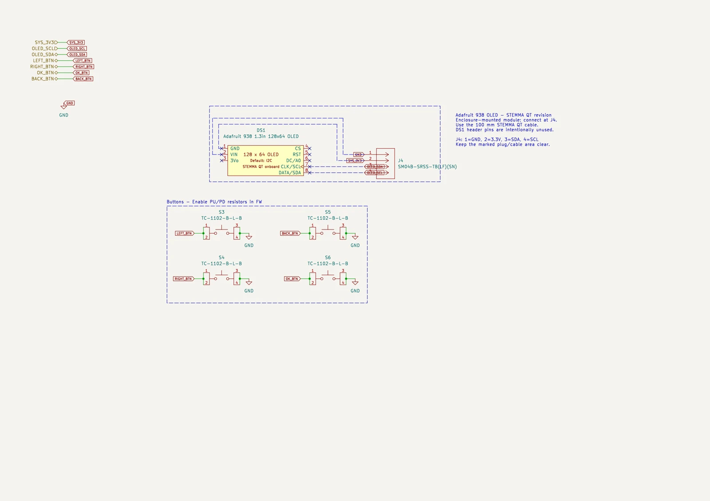
3.5.3 Pushbutton Interface
Four momentary pushbuttons provide the physical user inputs: LEFT, RIGHT, OK, and BACK.
Each button connects its GPIO input to ground when pressed. External 10 kΩ pull-ups R32–R35 define the released state, so firmware reads an active-low input. Firmware still needs to debounce button presses.
The buttons are intended to provide basic navigation and control functionality, including station selection, menu navigation, and confirmation of user actions.
Mechanical pushbuttons may exhibit contact bouncing during actuation, resulting in multiple electrical transitions from a single physical press. This behavior must be addressed through appropriate debouncing techniques, either in hardware or firmware, to ensure reliable command detection.
The use of dedicated GPIO connections simplifies the button circuitry and allows the interpretation of button presses to be implemented in firmware.
3.5.4 Microcontroller Interface Allocation
The RP2040 provides the electrical interfaces required to communicate with the display and detect button inputs.
The GPIO assignments identified in the microcontroller schematic are summarized in Table 7.
| Function | RP2040 GPIO | Signal |
|---|---|---|
| OLED data (I²C1) | GPIO18 | OLED_SDA |
| OLED clock (I²C1) | GPIO19 | OLED_SCL |
| Receiver data (I²C0) | GPIO4 | I2C_SDA |
| Receiver clock (I²C0) | GPIO5 | I2C_SCL |
| Speaker request | GPIO0 | MCU_SPK_REQUEST |
| Receiver reset request | GPIO13 | MCU_FM_RST_N |
| Headphone mute | GPIO20 | HP_MUTE |
| Jack detection | GPIO21 | JACK_ABSENT |
| Left button | GPIO12 | LEFT_BTN |
| Right button | GPIO9 | RIGHT_BTN |
| OK button | GPIO10 | OK_BTN |
| Back button | GPIO11 | BACK_BTN |
The microcontroller processes the user inputs and translates them into actions such as changing the receiver frequency or updating the displayed information.
Separating the interface hardware from the application logic allows changes to the display contents and button functionality to be implemented primarily through firmware modifications.
3.5.5 User Interface Design Summary
The user interface combines a commercially available OLED module with a small number of discrete switches, providing the required controls without introducing significant hardware complexity.
The modular display connection simplifies PCB integration and provides flexibility for future mechanical design, while the GPIO-based pushbutton interface allows the radio's control functions to be implemented in firmware.
The interface also demonstrates the integration of external modules with a custom microcontroller circuit, including digital communication, power distribution, GPIO configuration, and physical connector selection.
3.6 Receiver Power Supervision and Audio Control
The receiver reset path includes a TPS3808G01 supervisor. Its SENSE input monitors SYS_5V through R26 (97.6 kΩ) and R27 (10 kΩ), giving a nominal trip near 4.36 V using the 0.405 V threshold. GPIO13 controls the active-low manual-reset input through MCU_FM_RST_N. The supervisor output, FM_RST_SAFE, reaches the receiver reset pin and is pulled up to FM_3V3 by R28.
An LM66100 stage ahead of FB1 provides reverse-current blocking, while C50 (220 µF) supports the receiver supply during input-power transitions. The intent is to assert receiver reset before its supply decays. Power-removal timing and actual hold-up behavior remain part of hardware validation.
Headphone shutdown uses a separate SN74AHCT1G32 OR gate on SYS_5V. Its output is HP_SHUTDOWN = JACK_ABSENT OR HP_MUTE. HP_MUTE is pulled high at startup, so the MCU must deliberately allow headphone playback. Speaker control remains SPK_AMP_ACTIVE = MCU_SPK_REQUEST AND JACK_ABSENT, with a pull-down on the MCU request.
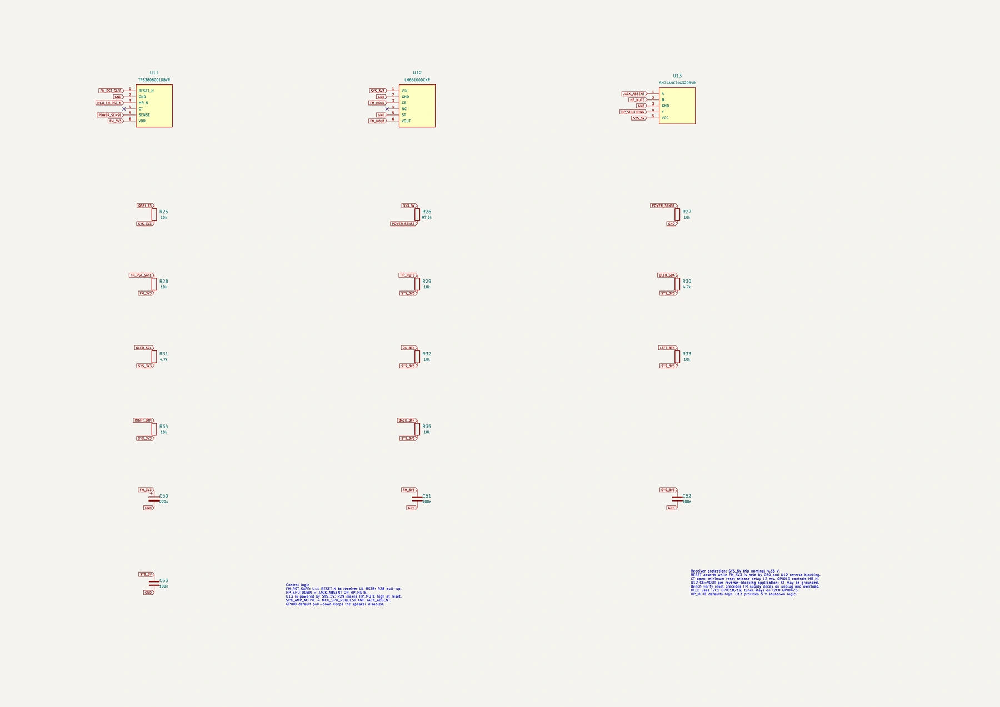
Component references: TPS3808 datasheet, LM66100 datasheet, and SN74AHCT1G32 datasheet.
4. PCB Design and Layout
The transition from schematic development to PCB implementation introduced additional engineering considerations involving component placement, signal routing, grounding, and manufacturing constraints.
Unlike schematic design, where electrical connections are represented as ideal conductors, PCB implementation requires accounting for the physical characteristics of traces, vias, copper planes, and component packages. These characteristics can influence power integrity, signal quality, electromagnetic coupling, and ultimately the performance of the assembled circuit.
The PCB was developed in KiCad, with particular emphasis on integrating RF, digital, power, and audio circuitry within a compact, manufacturable design.
4.1 Stackup and Design Constraints
4.1.1 PCB Stackup
A four-layer PCB architecture was selected to accommodate the different electrical requirements of the FM radio's RF, digital, and audio subsystems.
Compared with a conventional two-layer PCB, the additional copper layers provide greater flexibility for routing signals and distributing power while allowing more continuous ground reference planes. This is particularly beneficial in a mixed-signal design, where unwanted coupling between circuits can degrade overall system performance.
The board was designed using an FR-4 dielectric substrate with a nominal thickness of 1.6 mm and four copper layers. The stackup configuration includes two external copper layers and two internal copper layers, separated by FR-4 core and prepreg materials.
The documented stackup uses 35 µm copper, with nominal FR-4 model values εr ≈ 4.5 and loss tangent 0.02. These are design inputs, not measured laminate properties. The fabricator must confirm the actual dielectric thicknesses and material before any impedance-controlled routing is finalized.
Table 8 summarizes the principal PCB stackup parameters.
| Parameter | Design specification |
|---|---|
| PCB structure | Four-layer PCB |
| Substrate material | FR-4 |
| Nominal board thickness | 1.6 mm |
| Copper thickness | 35 µm per layer |
| Top copper layer | F.Cu |
| First internal layer | In1.Cu |
| Second internal layer | In2.Cu |
| Bottom copper layer | B.Cu |
| Top prepreg thickness | 0.10 mm |
| Internal core thickness | 1.24 mm |
| Bottom prepreg thickness | 0.10 mm |
| Relative permittivity (εr) | 4.5 |
| Dielectric loss tangent | 0.02 |
The four-layer configuration provides the opportunity to route sensitive signals over continuous reference planes, reducing return-path impedance and limiting unwanted electromagnetic coupling.
The listed dielectric thicknesses total 1.44 mm; four 35 µm copper layers bring the nominal total to 1.58 mm before solder mask and fabrication tolerances. The stated 1.6 mm board thickness is therefore a nominal specification.
This is particularly relevant to the FM antenna input, microcontroller clock circuits, and analog audio traces, where PCB parasitics and interference may influence circuit performance.
4.1.2 PCB Design Constraints
PCB layout was performed under electrical and manufacturing constraints that define the minimum allowable spacing, conductor dimensions, and mechanical clearances.
These constraints include minimum trace widths, copper-to-copper clearances, via dimensions, drill-hole clearances, and spacing between copper features and the board outline.
The design incorporates several fine-pitch surface-mount packages, including the RP2040 QFN, Si4705 QFN, and audio amplifier ICs. These packages require careful routing and footprint selection to maintain sufficient electrical clearance while accommodating the manufacturer's recommended land patterns.
Additional mechanical considerations arise from the USB-C connector, external antenna connector, headphone jack, and other components positioned near the PCB edges.
Design rules must therefore balance manufacturing capabilities with the electrical and mechanical requirements of the selected components.
4.1.3 Mixed-Signal Layout Considerations
The integration of RF, digital, and audio circuits on a common PCB requires careful management of signal return paths and electromagnetic interference.
The RF receiver is particularly sensitive to disturbances introduced through its antenna input, reference clock, and power supply connections. High-frequency digital signals generated by the RP2040 and switching activity from the Class-D speaker amplifier represent potential interference sources.
The PCB architecture was therefore developed with an emphasis on maintaining short signal paths, providing low-impedance ground returns, and minimizing the proximity of sensitive analog and RF traces to potential noise sources.
Power distribution also influences the layout. Local decoupling capacitors must be positioned near their corresponding IC supply pins, while connections to ground reference planes should be kept short to reduce parasitic inductance.
These considerations establish the foundation for the component placement and routing decisions discussed in the following sections.
4.2 Component Placement
4.2.1 Placement Strategy
Component placement is an important stage of PCB design, as the physical arrangement of components directly influences signal integrity, electromagnetic coupling, power distribution, and routing complexity.
For the FM radio PCB, particular consideration was given to the integration of RF, digital, power management, and audio circuits on a common board. Although the individual subsystems were developed separately at the schematic level, their physical implementation requires careful consideration of the interactions between them.
The placement strategy was therefore based on grouping components according to their functional relationships, minimizing the distance between electrically related components, and maintaining separation between noise-sensitive and potentially noisy circuitry.
Additional constraints were introduced by connectors, user-interface components, and mechanical mounting requirements, which influence the overall board dimensions and component arrangement.
4.2.2 Functional Subsystem Placement
The PCB contains several functional regions, each with different electrical and physical requirements.
The RF reception section is centered around the Si4705 receiver and its supporting components, including the antenna interface, reference crystal, and local supply decoupling. Keeping these components close together minimizes the length of sensitive RF and oscillator connections and reduces their exposure to interference from adjacent circuitry.
The digital control section contains the RP2040 microcontroller, external QSPI flash memory, 12 MHz reference crystal, and associated passive components. The placement of these components is particularly important because the QSPI and oscillator connections carry relatively high-frequency signals that may be affected by excessive trace length and parasitic loading.
The power management section contains the USB-C connector, TPS2553 power switch, TLV75533 voltage regulator, and associated filtering components. Their placement must support efficient power distribution while limiting the coupling of supply disturbances into sensitive circuits.
The audio circuitry is divided between the stereo headphone and mono speaker amplifier stages. This arrangement allows the low-level audio signal paths and higher-current speaker connections to be managed separately, reducing the potential for interference between them.
The overall component placement is illustrated in Figure 8.
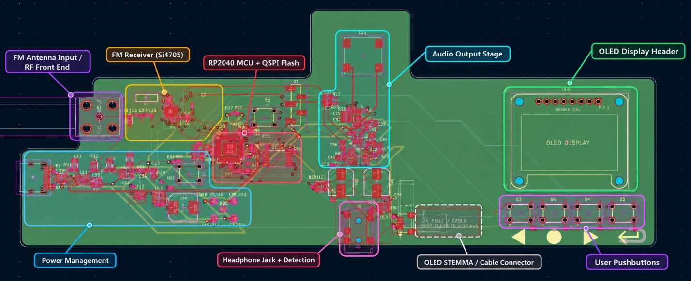
4.2.3 Placement of Sensitive Components
Several components require particular attention during placement due to their sensitivity to parasitic effects and external interference.
The Si4705 antenna connection should be kept short to limit insertion loss and unwanted coupling. Similarly, the receiver's 32.768 kHz reference crystal and supporting capacitors should be placed close to the associated IC pins to minimize stray capacitance and interference.
The RP2040's 12 MHz crystal and external flash memory also benefit from short connections. Excessive trace lengths may introduce additional parasitic capacitance and inductance, potentially affecting clock stability and digital signal integrity.
Local decoupling capacitors should be positioned close to the supply pins of their corresponding ICs. This reduces the inductance of the supply and ground connections and improves their ability to provide transient current during switching activity.
Particular consideration is also required for the TPA2005D1 Class-D speaker amplifier. Its output stage generates high-frequency switching signals, making it a potential source of electromagnetic interference. Appropriate physical separation from the receiver and antenna input helps reduce the risk of coupling into the RF circuitry.
4.2.4 Mechanical and Connector Placement
In addition to electrical considerations, the PCB layout must accommodate the physical dimensions and accessibility requirements of external connectors and mechanical components.
The USB-C connector, FM antenna connector, and headphone jack require suitable positioning along the board perimeter to allow external cables to be connected without mechanical interference.
The pushbuttons must also be arranged to provide convenient user access, while the OLED display connector should be positioned to simplify cable routing to the separately mounted display module.
Connector placement introduces additional manufacturing constraints, particularly for components that extend beyond or are positioned near the PCB outline. These constraints include component courtyard clearances, mechanical mounting holes, solder pad proximity to board edges, and assembly accessibility.
These mechanical requirements must be considered alongside electrical placement to ensure that the PCB can be assembled and integrated into an enclosure.
4.2.5 Placement Summary
The component placement process establishes the foundation for the subsequent routing stage. Grouping functionally related components and considering their electrical and mechanical requirements helps reduce routing complexity and the potential for unwanted coupling between subsystems.
The resulting arrangement must balance signal integrity, power distribution, mechanical accessibility, and PCB manufacturing constraints.
The implementation of signal traces, copper planes, vias, and grounding is discussed in Section 4.3.
4.3 Routing and Grounding
4.3.1 Routing Strategy
Following component placement, the individual electrical connections were implemented through copper traces, vias, and copper planes distributed across the four-layer PCB.
The routing process required balancing electrical requirements with physical constraints, including available board area, component density, trace clearances, and the need to maintain suitable return paths.
As illustrated in Figure 8, the PCB contains several functionally distinct regions, including RF reception, digital control, power management, and audio amplification. These subsystems impose different routing requirements, ranging from low-level analog signals to high-frequency digital connections and relatively high-current speaker outputs.
The routing strategy therefore prioritizes sensitive signals and connections with strict layout requirements, while using the additional copper layers to provide routing flexibility and support the distribution of power and ground.
4.3.2 RF and Analog Signal Routing
The RF signal path extends from the external antenna connector to the Si4705 receiver, located in the left portion of the PCB.
Because the antenna input carries relatively low-level RF signals, minimizing trace length, discontinuities, and coupling from nearby circuitry is important for preserving receiver sensitivity.
The RF input routing must also account for the impedance presented by the transmission line and the receiver input network. Although the operating frequency is considerably lower than that encountered in microwave circuits, PCB geometry, grounding, and nearby copper structures may still influence impedance and signal coupling.
The Si4705 reference crystal and supporting capacitors are located near the receiver to limit parasitic effects associated with longer oscillator connections.
Following demodulation, the analog stereo signals are routed toward the audio amplification stages. These traces require particular consideration because interference coupled into the audio paths may become audible after amplification.
Maintaining separation between low-level audio signals, digital control lines, and Class-D amplifier outputs helps reduce the risk of unwanted coupling.
4.3.3 Digital Signal and Clock Routing
The digital subsystem includes the RP2040 microcontroller, external QSPI flash memory, 12 MHz reference crystal, USB interface, and peripheral connections.
The QSPI interface consists of a clock, chip-select, and four data signals connecting the RP2040 to the external flash memory. Keeping these connections short helps reduce parasitic loading, signal reflections, and susceptibility to electromagnetic interference.
Similarly, the 12 MHz crystal circuit requires careful routing to minimize stray capacitance and coupling from nearby switching signals.
The USB data connections require consideration of trace geometry, differential routing, and signal return paths. Excessive discontinuities or poorly controlled routing may degrade signal integrity, particularly around connectors, protection components, and layer transitions.
Lower-speed connections, including I²C communication, pushbutton inputs, and amplifier control signals, generally allow greater routing flexibility. Nevertheless, these connections must maintain appropriate clearances and avoid unnecessary interaction with sensitive analog circuits.
4.3.4 Power Distribution and Grounding
The power distribution network provides separate 5 V and 3.3 V supplies to the system components, with an additional filtered supply connection for the Si4705 FM receiver.
The 5 V rail supplies the two audio amplifiers, while the 3.3 V rail supplies the RP2040, display circuitry, and other low-voltage components.
Power routing must account for the different load currents and transient requirements of these subsystems. In particular, the speaker amplifier can introduce relatively large current variations compared with the digital and RF circuits.
The use of internal copper layers provides the opportunity to establish low-impedance ground reference planes, reducing return-path inductance and supporting signal integrity.
Maintaining continuous return paths is particularly important for high-frequency digital signals and sensitive analog connections. Interruptions in the reference plane may force return currents to follow longer paths, increasing loop area and the potential for electromagnetic coupling.
Local decoupling capacitors are positioned near the power pins of integrated circuits, with short connections to the supply and ground networks.
The arrangement of traces and copper layers is illustrated in Figure 9.
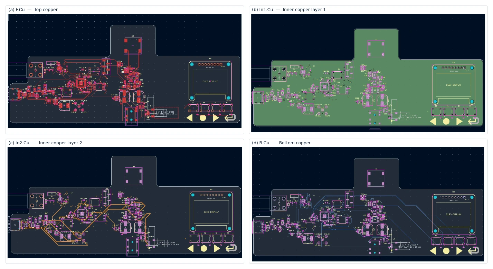
4.3.5 Audio Output Routing
The audio subsystem incorporates both low-level analog signal connections and amplified outputs intended to drive external loads.
The stereo headphone amplifier produces left and right outputs that are routed to the 3.5 mm headphone connector, while the Class-D speaker amplifier drives the onboard 8 Ω speaker.
The Class-D amplifier outputs require particular attention due to their high-frequency switching behavior. The output routing should minimize unnecessary loop area and avoid proximity to the RF input and other sensitive connections.
The differential speaker output should also be treated as a pair of switching conductors rather than as a conventional single-ended audio signal referenced to ground.
The physical separation between the RF receiver and the main audio output circuitry helps organize the different signal paths and provides opportunities to reduce interference.
4.3.6 Vias and Layer Transitions
Vias provide electrical connections between copper layers and allow traces to navigate around components or congested routing regions.
Although vias increase routing flexibility, they also introduce parasitic inductance and capacitance. Their use should therefore be considered carefully in sensitive RF, oscillator, and high-speed digital connections.
Ground vias are particularly important near decoupling capacitors and other components requiring low-impedance return paths.
The effectiveness of the routing depends not only on the individual traces but also on the continuity of the associated return paths across layer transitions.
4.3.7 Routing Summary
The four-layer PCB architecture provides the routing flexibility required to integrate the FM receiver, RP2040 microcontroller, power management circuitry, and audio amplification stages within a single board.
The main routing considerations include preserving the integrity of RF and analog signals, maintaining suitable digital signal paths, supporting power distribution, and reducing coupling between electrically dissimilar subsystems.
The completed routing must be evaluated using KiCad's Design Rules Checker (DRC) to identify clearance violations, incomplete connections, and other potential manufacturing issues.
The design verification process is presented in Chapter 5.
4.4 Mechanical Integration
4.4.1 Three-Dimensional PCB Visualization
Following component placement and routing, the PCB design can be evaluated in three dimensions using KiCad's integrated 3D Viewer.
Unlike the two-dimensional PCB editor, which primarily represents electrical connections, copper geometry, and component footprints, the 3D Viewer provides a physical representation of the assembled board. This allows the designer to examine component orientation, connector placement, mechanical clearances, and the overall arrangement of the electronic system.
For the FM radio PCB, three-dimensional visualization is particularly useful due to the combination of surface-mount electronics, external connectors, user-interface components, and mechanically larger components such as the speaker and OLED display.
The PCB incorporates an irregular outline with a dedicated extension for the speaker, while the main electronic circuitry is distributed across the central and left portions of the board. The user-interface components occupy the right side, separating the physical controls from the more densely populated electronic circuits.
The overall physical design is presented in Figure 10.
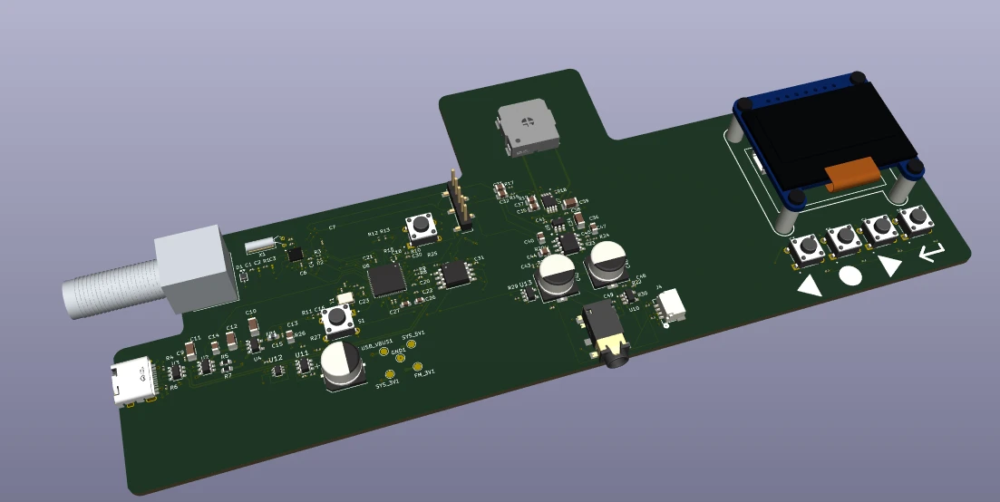
4.4.2 Mechanical Integration and Accessibility
The physical layout of the PCB was influenced by the need to accommodate external interfaces and user-accessible components while maintaining a compact electronic assembly.
The USB-C connector is positioned along the left edge of the PCB, allowing an external cable to provide power and communication with the microcontroller. The FM antenna connector is positioned near the RF receiver circuitry, reducing the distance between the external antenna interface and the receiver input.
The headphone jack is positioned along the lower edge of the board, providing convenient access without requiring the audio cable to pass over the main electronic circuitry.
The four user-interface pushbuttons are arranged in a horizontal row along the right side of the PCB. This arrangement provides a consistent physical interface for navigation and control.
The OLED display is represented in the PCB design for mechanical planning, while its electrical interface is provided through a separate STEMMA QT-compatible connector. The connector location and cable clearance requirements must be considered when integrating the display into an enclosure.
The onboard speaker occupies a dedicated extension of the PCB outline, allowing it to be mechanically accommodated without occupying the densely populated regions of the main board.
4.4.3 Assembly and Mechanical Verification
Three-dimensional visualization also provides an opportunity to identify potential mechanical integration issues before PCB fabrication.
These include incorrect connector orientation, insufficient space between neighboring components, interference between component bodies, and inadequate clearance around mounting features or external interfaces.
Particular attention is required for the USB-C connector, headphone jack, and display cable connection, as these components interact directly with the external mechanical environment.
The 3D model can also serve as a reference for future enclosure design, helping establish the required internal dimensions, mounting locations, connector openings, and component clearances.
However, the rendering represents the mechanical geometry defined by the selected footprints and associated 3D models. It does not independently guarantee physical compatibility. Critical dimensions and connector orientations must still be verified against manufacturer datasheets and, ultimately, the assembled hardware.
4.4.4 Mechanical Design Summary
The three-dimensional representation complements the electrical PCB layout by providing a means of evaluating the physical integration of the system.
The combination of compact surface-mount circuitry, external connectors, accessible controls, and dedicated mechanical regions illustrates the additional considerations involved in developing a complete electronic product rather than an isolated circuit.
The resulting PCB design provides a basis for manufacturing preparation, mechanical verification, and future enclosure development.
The following chapter addresses the electrical and manufacturing design checks required before PCB fabrication.
5. Design Verification
Design verification was performed using KiCad's integrated Electrical Rules Checker (ERC) and Design Rules Checker (DRC). These tools evaluate different aspects of the electronic design, identifying potential errors in schematic connectivity and physical PCB implementation.
The verification process provides an important intermediate step between circuit development and fabrication, helping ensure that the electrical connections and PCB geometry comply with the defined design requirements.
5.1 Electrical Rules Check (ERC)
The Electrical Rules Check (ERC) was performed to evaluate the schematic for potential electrical connectivity and pin compatibility issues.
KiCad's ERC analyzes the electrical relationships between component pins, power sources, and connected nets. It can identify problems such as incompatible pin connections, undriven power inputs, and missing or incorrectly defined electrical connections.
For the FM radio project, schematic verification is particularly relevant due to the integration of multiple functional subsystems across hierarchical schematic sheets. These include the power management circuit, Si4705 receiver, RP2040 microcontroller, audio amplifiers, and user interface.
KiCad 10.0.4 ERC was rerun on the current hierarchical schematic. It reports zero errors and warnings under the project’s configured rules, as summarized in Table 9.
| Verification parameter | Result |
|---|---|
| Verification environment | KiCad ERC |
| Scope | Complete hierarchical schematic |
| Reported violations | 0 (configured errors and warnings) |
| Final ERC status | Passed; KiCad 10.0.4 rerun on October 29, 2026 |
The exported netlist was also checked for the MCU clock, core-supply, reset, SWD, flash, I²C, amplifier-feedback, jack-output, and control-signal connections.
However, ERC does not verify the functional correctness of the circuit, the suitability of selected component values, or compliance with all manufacturer requirements. These aspects require additional design review and, ultimately, hardware testing.
5.2 Design Rules Check (DRC)
Following PCB layout and routing, the Design Rules Check (DRC) was performed to evaluate the physical implementation against the configured PCB design constraints.
Unlike ERC, which evaluates schematic connectivity, DRC examines physical layout characteristics such as copper clearances, trace widths, via dimensions, component placement constraints, and unrouted connections.
These checks are particularly important for the FM radio PCB because of its combination of fine-pitch components, multilayer routing, external connectors, and mixed-signal circuitry.
KiCad 10.0.4 PCB DRC was rerun with schematic-parity checking enabled. It reports zero violations, zero unconnected items, and zero schematic-parity differences under the project’s configured rules.
| Verification parameter | Result |
|---|---|
| Verification environment | KiCad DRC |
| PCB configuration | Four-layer PCB |
| Scope | Complete PCB layout |
| Reported violations | 0 (configured errors and warnings) |
| Final DRC status | Passed; KiCad 10.0.4 rerun on October 29, 2026 |
These checks establish connectivity and rule compliance for the current design revision; they do not establish measured circuit operation.
Nevertheless, passing DRC does not independently guarantee manufacturability or electrical performance. The PCB must still be reviewed against the selected manufacturer's fabrication capabilities, particularly regarding fine-pitch footprints, connector placement, drill tolerances, and solder mask requirements.
The ERC, DRC, and netlist checks provide the design-verification baseline for manufacturing preparation. Any later electrical or layout changes require the relevant checks to be repeated.
5.3 Manufacturing Preparation
5.3.1 Manufacturing Requirements
Following the completion of schematic and PCB design verification, the next stage involves preparing the design for manufacturing and assembly.
Although the Electrical Rules Check (ERC) and Design Rules Check (DRC) reported zero violations, additional preparation is required to translate the KiCad design into files suitable for PCB fabrication and component assembly.
The manufacturing process requires the generation of production files describing the PCB copper layers, solder mask, silkscreen, board outline, and drilled holes. Additional documentation, including a Bill of Materials (BOM) and component placement data, supports component procurement and assembly.
Particular consideration must be given to the four-layer board configuration, fine-pitch surface-mount components, and mechanically constrained connectors.
5.3.2 PCB Fabrication Files
KiCad supports the generation of Gerber files, which describe the individual manufacturing layers of the PCB. Each file represents a specific physical feature of the board, such as copper traces, solder mask openings, or silkscreen markings.
For the FM radio PCB, the fabrication package requires Gerber files for all four copper layers (F.Cu, In1.Cu, In2.Cu, and B.Cu), along with solder mask, silkscreen, and board outline information.
Separate drill files describe the locations and diameters of plated and non-plated holes, including vias, through-hole component connections, and mechanical mounting features.
The generated files should be inspected using a Gerber viewer before being submitted for fabrication. This review helps identify problems such as missing layers, incorrect board outlines, and unexpected copper or solder mask features that may not be immediately apparent in the PCB editor.
5.3.3 Component Assembly Preparation
In addition to the bare PCB, the completed electronic system requires the procurement and assembly of its electronic components.
KiCad can generate a Bill of Materials (BOM) containing the component references, quantities, values, and associated manufacturer part numbers. This information is used to identify and order the components required for assembly.
Component placement files may also be generated to support automated pick-and-place assembly. These files provide the position, orientation, and board side of individual components.
The FM radio design incorporates several component packages requiring careful assembly considerations, including the RP2040 and Si4705 QFN packages, fine-pitch integrated circuits, and small surface-mount passive components.
Connector orientation is another important consideration. The USB-C, antenna, headphone, and OLED cable connectors must be checked against their manufacturer-defined footprints to ensure correct physical alignment and accessibility after assembly.
5.3.4 Design for Manufacturing Review
Before releasing the PCB for fabrication, the final manufacturing package should be reviewed against the capabilities of the selected PCB manufacturer.
This review includes verification of copper clearances, minimum trace widths, drill sizes, solder mask openings, and the compatibility of fine-pitch footprints with the selected fabrication and assembly processes.
Mechanical features require additional attention, particularly the board outline, connector positions, speaker mounting arrangement, and clearances associated with the OLED display and cable connection.
Although KiCad's DRC provides automated verification of the configured design rules, the manufacturing review must also account for constraints specific to the selected fabrication and assembly processes.
The principal manufacturing deliverables and verification activities are summarized in Table 11.
| Deliverable | Purpose |
|---|---|
| Copper Gerber files | Define the four PCB copper layers |
| Solder mask Gerbers | Define solder mask openings |
| Silkscreen Gerbers | Define printed markings and reference designators |
| Board outline Gerber | Define the PCB dimensions and geometry |
| Drill files | Define plated and non-plated holes |
| Bill of Materials (BOM) | Support component procurement |
| Component position files | Support automated PCB assembly |
| Gerber inspection | Verify manufacturing layer outputs |
| Footprint and orientation review | Verify physical component compatibility |
| Fabrication capability review | Confirm compliance with manufacturer constraints |
5.3.5 Manufacturing Preparation Summary
Manufacturing preparation represents the final transition from electronic design to physical implementation.
The completed schematic and PCB design provide the electrical and mechanical information required to generate fabrication files and assembly documentation. The successful ERC and DRC results establish a useful verification baseline, while manufacturing-specific reviews provide an additional level of confidence before fabrication.
The actual electrical and functional performance of the system can only be established through subsequent hardware assembly and testing.
5.4 Planned Hardware Validation
5.4.1 Hardware Validation Objectives
Following PCB fabrication and assembly, the FM radio will require electrical and functional testing to verify that the physical implementation operates as intended.
Although the schematic and PCB design have successfully passed the Electrical Rules Check (ERC) and Design Rules Check (DRC), these automated checks cannot establish the actual electrical performance of the assembled system.
Hardware validation will therefore focus on verifying power distribution, microcontroller operation, digital communication, RF reception, audio output functionality, and the interactions between the different subsystems.
The proposed testing process is intended to follow a progressive approach, beginning with fundamental electrical checks before proceeding to system-level functional evaluation.
5.4.2 Initial Power-Up and Electrical Verification
The initial testing stage will focus on identifying potential assembly defects and verifying the power management circuitry before enabling the remaining subsystems.
Before applying power, the assembled PCB should be inspected for solder bridges, incorrectly oriented components, missing parts, and other visible manufacturing defects. Resistance measurements between the primary supply rails and ground should also be performed to identify potential short circuits.
The initial power-up should be performed using a current-limited 5 V supply, allowing unexpected current consumption to be detected without immediately exposing the board to the full available supply current.
The primary electrical measurements will include the USB input voltage, protected 5 V rail, regulated 3.3 V rail, and filtered FM receiver supply.
Additional testing should verify the TPS2553 current-limiting and fault indication behavior, as well as the ability of the TLV75533 regulator to maintain its intended output voltage under representative load conditions.
5.4.3 Microcontroller and Digital Interface Verification
Following successful power verification, testing will proceed to the RP2040 microcontroller and its supporting circuitry.
The first objective will be to establish USB communication with a host computer and verify operation of the BOOTSEL and RUN circuits. Successful firmware programming will provide an initial indication that the microcontroller, external QSPI flash, reference clock, and USB connections are functioning.
The next stage will involve verifying the digital interfaces connecting the microcontroller to the FM receiver, OLED display, and pushbuttons.
The Si4705 should respond to commands transmitted over its I²C interface, while the OLED should display basic test patterns or information generated by the microcontroller. Individual button inputs and amplifier control signals should also be checked to verify correct GPIO functionality.
5.4.4 RF Reception and Audio Verification
Once the digital interfaces are operational, testing will focus on the FM receiver and audio amplification circuitry.
An external FM antenna or appropriately controlled RF test signal will be connected to the receiver input. The system should be able to tune across the intended 88–108 MHz frequency range and recover audio from suitable FM signals.
The stereo headphone amplifier should then be evaluated for correct left and right channel operation, while the mono speaker amplifier should be tested to verify the audio summing and amplification functionality.
The automatic headphone detection and speaker muting circuitry will also require verification. In particular, inserting headphones should disable the speaker amplifier even when the microcontroller requests speaker playback.
Additional characterization may include evaluating audio distortion, output noise, receiver sensitivity, and susceptibility to interference generated by the onboard digital and audio circuitry.
5.4.5 Proposed Validation Checklist
The planned verification activities are summarized in Table 12.
| Test category | Proposed verification | Expected outcome |
|---|---|---|
| Visual inspection | Inspect solder joints, polarity, and component orientation | No visible assembly defects |
| Power input | Apply current-limited 5 V input | Stable power-up without excessive current |
| Voltage regulation | Measure SYS_5V, SYS_3V3 and FM_3V3 | Voltages within component operating requirements |
| Power protection | Evaluate current limiting and fault indication | Correct protective behavior |
| MCU operation | Test BOOTSEL, RUN and firmware programming | Successful programming and execution |
| External memory | Verify QSPI flash operation | Reliable program storage and execution |
| Digital interfaces | Test I²C communication and OLED | Successful device communication |
| User controls | Test four pushbuttons | Correct response to each input |
| FM reception | Tune and receive FM broadcasts | Successful reception across intended band |
| Headphone audio | Verify left and right audio channels | Correct stereo playback |
| Speaker audio | Verify mono summing and amplification | Functional speaker output |
| Output switching | Insert and remove headphones | Speaker correctly disabled when headphones are connected |
| System operation | Operate all subsystems simultaneously | Stable operation without unintended resets or interference |
All tests in Table 12 represent proposed validation activities and have not yet been performed.
5.4.6 Hardware Validation Outlook
The proposed validation process will provide an opportunity to evaluate the practical behavior of the PCB beyond the limitations of schematic and layout verification.
Particular attention will be given to the interaction between the RF receiver, digital control circuitry, and audio amplification stages, as these subsystems share power and ground connections and may influence one another through electromagnetic coupling.
Any issues identified during testing will provide feedback for subsequent design revisions, potentially involving component values, power filtering, signal routing, or firmware configuration.
The aim is to progress from a reviewed PCB design to an experimentally evaluated receiver, using test results to guide any circuit or layout revisions.
6. Engineering Challenges and Design Trade-offs
The development of the FM radio PCB involved several engineering decisions that required balancing system functionality, implementation complexity, physical constraints, and manufacturing considerations.
Throughout the design process, the initial architecture was refined to accommodate practical limitations encountered during schematic development and PCB layout. These decisions affected component selection, power management, subsystem integration, and mechanical design.
6.1 Component Selection and System Complexity
The selection of major components was guided by the objective of developing a functional FM radio while gaining experience in custom hardware and PCB design.
The Si4705 was selected as the primary receiver because it integrates the functions required for FM reception and demodulation, eliminating the need to implement a discrete RF receiver chain. This approach reduced RF circuit complexity while allowing the project to focus on system integration.
Similarly, the RP2040 was selected to provide digital control, user interface management, and USB communication through a single microcontroller. However, implementing the RP2040 directly on the PCB, rather than using a preassembled development module, introduced additional requirements involving external flash memory, clock generation, power decoupling, and programming interfaces.
These component choices reflect a balance between using integrated solutions to simplify specialized functions and retaining sufficient hardware development complexity to meet the project's educational objectives.
6.2 Power Architecture Simplification
One of the more significant architectural changes involved the power management subsystem.
The initial design concept included the possibility of powering the radio using either USB-C or an onboard battery. This arrangement would have improved portability by allowing operation without an external USB power source.
However, supporting multiple power sources introduced additional hardware requirements, including battery accommodation, power-source selection, protection circuitry, and voltage regulation across varying input conditions.
As PCB development progressed, the additional circuitry and physical space requirements were found to be disproportionate to the primary objectives of the project.
Consequently, the battery functionality was removed, and the architecture was simplified to operate exclusively from USB-C power.
The final implementation uses a TPS2553 current-limited power switch to establish the protected 5 V supply, followed by a TLV75533 linear regulator to generate the 3.3 V rail.
This decision reduced the number of components, simplified power distribution, and eliminated the mechanical space required for the battery. The main disadvantage is the loss of standalone portable operation, as the system now requires an external USB power source.
Nevertheless, this trade-off was considered acceptable because the primary objective was to develop and evaluate the electronic hardware rather than optimize the product for portable operation.
6.3 Mixed-Signal Circuit Integration
Another challenge involved integrating RF reception, digital control, power management, and audio amplification on a common PCB.
Each subsystem introduces different electrical considerations. The Si4705 handles relatively low-level RF signals, the RP2040 generates high-frequency digital switching activity, and the Class-D speaker amplifier produces switching waveforms capable of coupling into neighboring circuits.
These interactions create potential interference mechanisms through shared power supplies, ground return paths, and electromagnetic coupling.
To address these concerns, the design incorporates a dedicated filtered supply for the FM receiver, local decoupling near the integrated circuits, and a four-layer PCB architecture that supports signal routing and ground reference planes.
Component placement and routing also require balancing physical separation between potentially interfering circuits against the need to maintain short electrical connections and a compact overall PCB.
Although these design choices are intended to reduce unwanted coupling, their effectiveness will require experimental evaluation following PCB fabrication.
6.4 Electrical and Mechanical Integration
The physical integration of the FM radio introduced additional constraints beyond those associated with schematic design.
The PCB includes several external interfaces, including USB-C, an FM antenna connector, a headphone jack, four pushbuttons, and a separately connected OLED display. These components impose mechanical constraints involving connector accessibility, footprint orientation, cable clearance, and component positioning.
The use of a separate OLED module connected through a STEMMA QT-compatible cable was intended to simplify the display interface and provide flexibility for future enclosure design.
Similarly, the onboard speaker was accommodated using a dedicated extension of the PCB outline, allowing the speaker to occupy a separate mechanical region from the more densely populated electronic circuitry.
These decisions illustrate the interaction between electrical and mechanical requirements during PCB development. While more compact placement may reduce routing distances, it can also introduce mechanical interference, assembly difficulties, or increased coupling between sensitive circuits.
The resulting PCB layout represents a compromise between electrical performance, physical accessibility, routing complexity, and manufacturability.
6.5 Summary of Engineering Trade-offs
The major engineering decisions encountered during the project are summarized in Table 13.
| Design decision | Benefit | Trade-off |
|---|---|---|
| Integrated Si4705 receiver | Simplifies RF reception and demodulation | Less flexibility than a discrete RF architecture |
| Direct RP2040 implementation | Provides experience in complete MCU hardware design | Requires external memory, clock, and supporting circuitry |
| USB-C-only power | Reduces component count, space requirements, and complexity | Requires external power for operation |
| Separate headphone and speaker amplifiers | Supports different audio loads and output configurations | Increases component count and routing complexity |
| Filtered FM receiver supply | Reduces potential high-frequency supply noise coupling | Additional passive components and layout considerations |
| Four-layer PCB | Improves routing flexibility and ground reference availability | Higher fabrication cost than a conventional two-layer PCB |
| External OLED module | Simplifies display integration and enclosure flexibility | Requires an additional connector and cable |
| Dedicated speaker extension | Accommodates the speaker separately from dense circuitry | Increases the overall PCB dimensions |
The design process demonstrated that engineering decisions must account for practical constraints rather than focusing exclusively on maximizing functionality.
In particular, simplifying the power architecture illustrated the importance of evaluating whether additional features justify their impact on PCB complexity, size, and development effort.
The resulting design captures the intended project scope and provides a foundation for further review, fabrication, testing, and refinement.
7. Conclusions and Future Work
7.1 Project Summary
This project explored the complete hardware design process of a custom FM radio receiver, from initial system requirements and component selection to schematic development, PCB layout, and design verification using KiCad.
The primary objective was to gain practical experience in electronic hardware development while designing a functional product incorporating RF reception, digital control, power management, audio amplification, and user-interface circuitry.
The resulting design integrates a Silicon Labs Si4705 FM receiver, an RP2040 microcontroller, dedicated stereo headphone and mono speaker amplification stages, and an OLED-based user interface onto a custom four-layer PCB.
Throughout the development process, the design was refined to address electrical, mechanical, and implementation constraints. These included power distribution, signal routing, component placement, and the integration of subsystems with different electrical requirements.
The current project passes ERC and PCB DRC with schematic parity enabled, with zero reported violations. Netlist checks confirm the control allocation, clock and power paths, and audio connections. Fabrication and experimental validation remain future milestones.
7.2 Lessons Learned
The project provided practical experience in several aspects of electronic hardware development that extend beyond individual circuit design.
One of the primary learning outcomes was understanding the process of translating component datasheet requirements into complete electrical circuits. Implementing the RP2040 directly on the PCB, for example, required consideration of external memory, clock generation, power decoupling, programming interfaces, and supporting control circuitry.
Another important aspect was the integration of multiple functional subsystems. Combining RF, digital, and analog circuitry highlighted the importance of power integrity, grounding, component placement, and signal routing, particularly where sensitive receiver circuits share a PCB with digital and audio switching activity.
The project also demonstrated the relationship between electrical design and mechanical constraints. Connector accessibility, component footprints, assembly requirements, and board geometry all influenced the final PCB implementation.
Finally, the development process emphasized the importance of engineering trade-offs. Decisions regarding component selection, system functionality, and physical complexity required balancing the desired capabilities against practical design constraints.
7.3 Future Work
The next milestone is manufacturing-file preparation, followed by fabrication, assembly, and the progressive hardware-validation plan in Section 5.4.
Initial testing will focus on verifying the power distribution network, microcontroller operation, external memory, and digital communication interfaces. Following successful electrical bring-up, attention will shift toward FM reception, audio amplification, user-interface functionality, and automatic speaker muting.
Firmware development and integration will also be required to implement the intended radio functionality, including station tuning, audio control, user-interface navigation, and display updates.
Further characterization may include receiver sensitivity, audio output performance, power consumption, and the influence of digital and Class-D switching activity on RF reception.
Based on the results of hardware testing, subsequent PCB revisions may address identified electrical or mechanical issues. Additional development could include a dedicated enclosure, improved user-interface functionality, and further optimization of the physical design.
7.4 Final Remarks
The project provided an opportunity to develop a complete electronic hardware design while gaining practical experience with KiCad and the broader PCB development process.
Beyond the individual circuits, the main contribution of the project was the integration of multiple electrical subsystems into a single design, requiring consideration of both system-level functionality and physical implementation constraints.
Although fabrication and hardware validation remain future milestones, the completed schematic and PCB layout represent a substantial step toward a functional FM radio receiver and establish a foundation for continued hardware development.
Component References
- Si4704/05-D60 receiver datasheet
- Hardware design with RP2040
- RP2040 datasheet and GPIO function mapping
- TPS2553 power switch datasheet
- TLV755P regulator datasheet
- TPA6111A2 headphone amplifier datasheet
- TPA2005D1 speaker amplifier datasheet